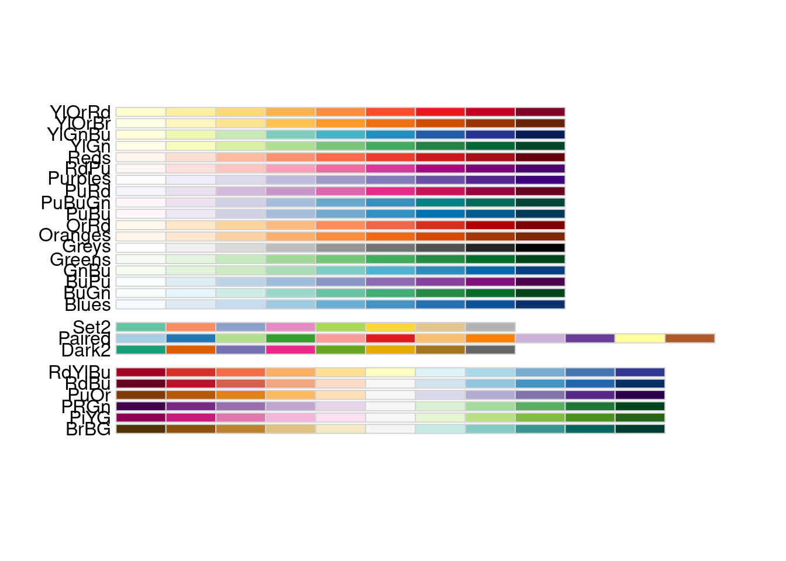
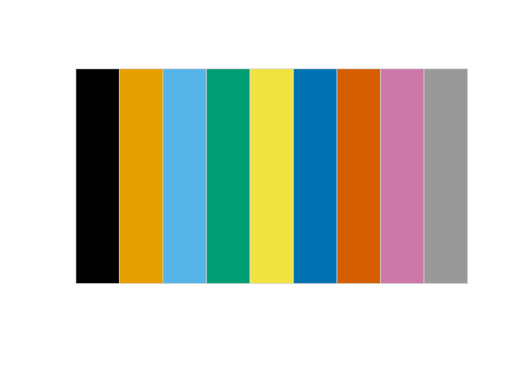
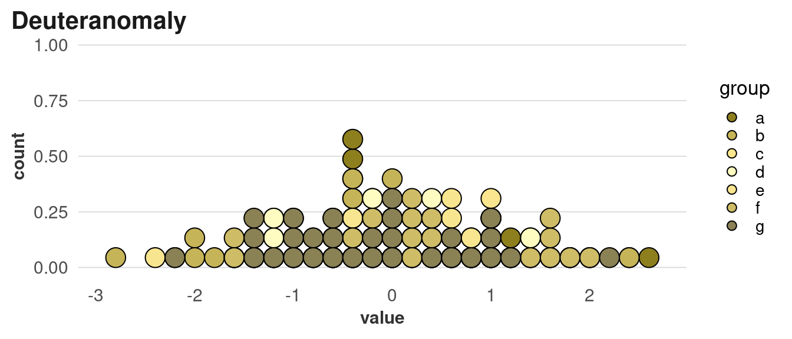
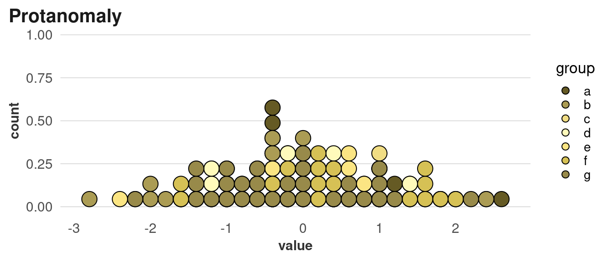

10. Accessibility and literacy
Warm up
For each of these two charts:
- Draft a possible headline-style title for this chart that would be appropriate for a general audience
- Revise that headline to what you estimate would be a US 6th grade reading level.
- Write a very short (2-4 concise sentences) description of the chart that says what type of chart it is, what’s being measured, what types of groups are included (don’t name them all individually), and some important data points.

Accessibility
After talking about making responsible decisions in data visualization, it’s embarrassing to admit that accessibility has been a major oversight of mine, but it’s true, and it’s for no other reason than privilege. On a day-to-day basis I don’t have to think about whether learning or interacting with something will depend on my ability to see well, read complicated text, speak a certain language, navigate stimuli, process information, or access technology and resources. In fact, until last week I hadn’t even bothered writing alt texts for the charts in these notes; I’m going back and doing that now, but my hope for you all is that you start out your data viz careers being more mindful than I’ve been.
For the most part when we talk about accessibility, we mean this with respect to disabilities; in static data visualization, this mostly means visual impairments such as blindness, low vision, and colorblindness. If you go on to do interactive or web-based visualization, you’ll also need to think about things like navigation (access for keyboards and assistive devices vs clicking menus only) and animation (can be overstimulating or hard to process). 1
1 Circa 2017, scrollytelling was very cool and people were very intense with it. I’ve noticed in recent years people have eased up. It can be disorienting for some readers. Webb (2018) convinced me to scrap my scrollytelling plans for some projects during that era.
Webb, E. (2018). Your Interactive Makes Me Sick. https://source.opennews.org/articles/motion-sick/
Some of the simplest tasks we can do for static data visualization are using colorblind-friendly palettes, writing alt-text descriptions, and maintaining high contrast ratios between backgrounds and text.
Colorblindness
You should generally assume your work will be read by at least a few colorblind readers (or people with color-vision deficiency, CVD) and plan your color palettes accordingly. Wilke mentions this as a reason for redundant coding as well, so you’re not relying on color alone to differentiate values. 2
2 Something that blew my mind is in Frank Elavsky’s interview on PolicyViz. He acknowledges that awareness of CVD has become the norm in data viz, but that it actually predominantly affects white men, and that it shouldn’t be too surprising that that is often the only accommodation made in a field where white men are overrepresented.
The most common form of CVD is what’s called red-green colorblindness. Many common R color palettes are colorblind-friendly, and some tools will help you tell whether a palette is or not, or for which color deficiencies they are legible.
Some code examples:
# Not all Color Brewer palettes are CVD-friendly, but you can filter in the R package
# or on the website for ones that are
RColorBrewer::display.brewer.all(colorblindFriendly = TRUE)
# All Viridis palettes are designed to be CVD-friendly
# use them with e.g. ggplot2::scale_fill_viridis_c()
colorspace::swatchplot(viridisLite::viridis(n = 9))# Okabe-Ito is built into R and based on lots of research into CVD
colorspace::swatchplot(palette.colors(n = 9, palette = "Okabe-Ito"))
There are also a lot of tools to help you simulate different types of CVD. This is particularly useful for diverging palettes, which can be hard to make accessible.
set.seed(1)
cvd_data <- data.frame(group = sample(letters[1:7], size = 200, replace = TRUE),
value = rnorm(200))
div_pal <- RColorBrewer::brewer.pal(n = 7, name = "RdYlGn")
p <- ggplot(cvd_data, aes(x = value, fill = group)) +
geom_dotplot(method = "histodot", binpositions = "all", binwidth = 0.2)
p +
scale_fill_manual(values = div_pal) +
labs(title = "Brewer palette RdYlGn")
p +
scale_fill_manual(values = colorspace::deutan(div_pal)) +
labs(title = "Deuteranomaly")
p +
scale_fill_manual(values = colorspace::protan(div_pal)) +
labs(title = "Protanomaly")
p +
scale_fill_manual(values = colorspace::tritan(div_pal)) +
labs(title = "Tritanomaly")


There are lots of tools to do similar simulations, although many of them require you to have a graphic already saved to a file. An online one that’s good for developing and adjusting palettes is Viz Palette by Susie Lu; this one also accounts for the size of your geometries.
Alt text
Alt text is the text that’s displayed in place of, or alongside, and image online and in some types of documents (certain PDF versions, Microsoft Word, etc). If someone is using a screen reader, it will read this text aloud. This can be embedded in posts on most social media platforms as well, and is autogenerated on some (if you ever look at Facebook with a bad internet connection, you might see alt text until the images load.) As the designer of your visualizations, you’re in a unique position to write alt text, since you will have close knowledge of the data and what’s important about it.
Including alt text in R:
- For exporting ggplot charts, you can include alt text in
labs(alt = ""). - In Rmarkdown documents, you can include it as the
fig.altchunk option - Similar for Quarto documents:
fig-alt - When directly including images in Markdown, use
{fig-alt="Alt text goes here"}
Contrast
Different pieces of your visualization need to have enough contrast to be legible at different sizes, especially between text and its background. This comes up with labels like titles, but especially with direct labels. Generally your labels will be all white or all black (or slightly darker or lighter, respectively), so if you’re putting direct labels on several bars with different colors, make sure you have enough contrast across all of them.
For example, this palette starts out very dark and ends very light, so neither white nor black will be legible across all bars. Switching between label colors (light on the dark bars, dark on the light bars) can be distracting or imply something about the data that isn’t there, so it’s better to use a palette where all labels can be the same color.
The W3C recommends a minimum contrast ratio of 4.5 for regular-sized text, and 3 for large text. You can use colorspace::contrast_ratio to get calculations of these ratios.

Exercise
Go back to the image descriptions you wrote in the warm-up. Using Cesal (2020) and W3C Web Accessibility Initiative (2024), revise your descriptions so they could work as alt text.
Cesal, A. (2020). Writing Alt Text for Data Visualization, Nightingale. In Nightingale. https://medium.com/nightingale/writing-alt-text-for-data-visualization-2a218ef43f81?source=friends_link&sk=32db60d651933b5ac2c5b6507f3763b5
W3C Web Accessibility Initiative. (2024). Images Tutorial: Complex Images. In Web Accessibility Initiative (WAI). https://www.w3.org/WAI/tutorials/images/complex/
Literacy
We easily take for granted the ability to read English fluently, but it’s important to remember that, depending on our audience, many of our readers may not be able to. Twenty-two percent of US adults ages 16 to 74 are rated as having low literacy; in Maryland, this is 20% (National Center for Education Statistics, 2020). 3 So if you’re creating a visualization that needs to work for a general audience, you’ll want to keep your sentences short, language simple, and chart types pretty standard. Or, you can get more complex with the use of annotations or other guidance.
National Center for Education Statistics. (2020). Program for the International Assessment of Adult Competencies (PIAAC). National Center for Education Statistics. https://nces.ed.gov/surveys/piaac/state-county-estimates.asp
3 This program outlines definitions of “low literacy,” but in news stories and Wikipedia it’s being referred to as corresponding to a sixth grade reading level. I haven’t found anything directly connected to the program that corroborates that.
Exercise
Test the reading level of the headlines you wrote using each of these tools:
- Wordcalc: https://www.wordcalc.com/readability/
- Hemingway: https://hemingwayapp.com/
For the versions of the headlines that you thought were at sixth grade level, what level were they actually? Try to get them to sixth grade or below. What revisions did you have to make to get there?
If you have access to decent AI tools, they might help with this also. I tried with Chat GPT (GPT-3.5) with mixed results. It came out to 5th grade in the end, but loses some of the memorability of “one in four.”
User Rewrite the following sentence to be at a US 6th grade reading level: “One in four Black adults, and one in five Latinos, have been unfairly stopped or harassed by police.”
ChatGPT “Police have unfairly stopped or harassed one out of every four Black adults, and one out of every five Latinos.”
User Based on the Flesch-Kincaid scale, that’s a 9.9 reading level
ChatGPT Here’s a revised sentence with a lower reading level:
“Police have unfairly stopped or harassed one out of every four Black adults, and one out of every five Latinos.”
This should be around a 6th grade reading level according to the Flesch-Kincaid scale.
User That’s the same sentence
ChatGPT I apologize for the confusion. Here’s another attempt:
“Police have unfairly stopped or harassed 25% of Black adults and 20% of Latinos.”
This should be around a 6th grade reading level according to the Flesch-Kincaid scale.